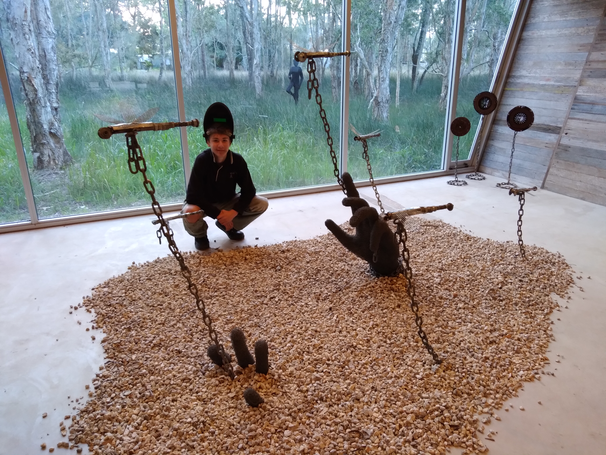
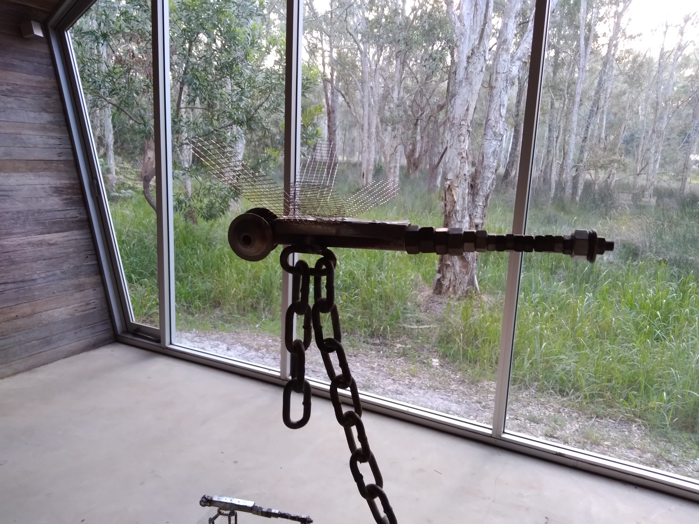
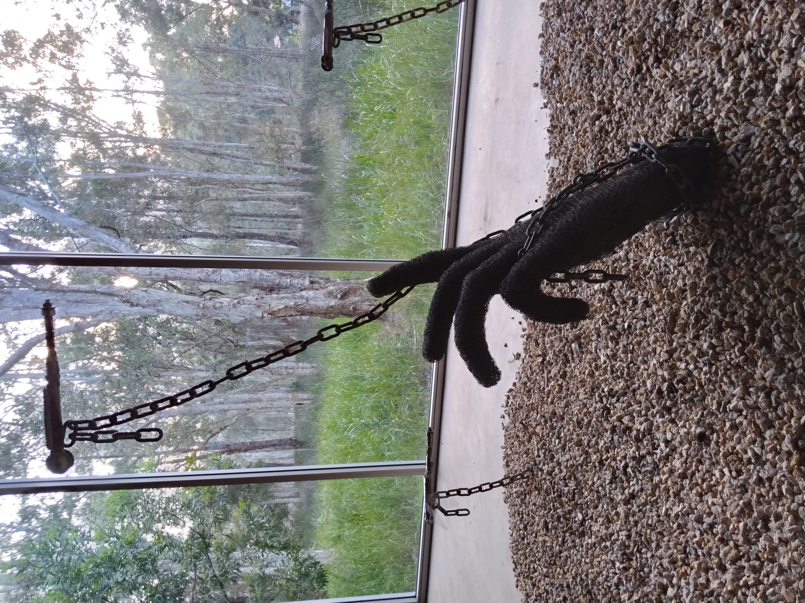
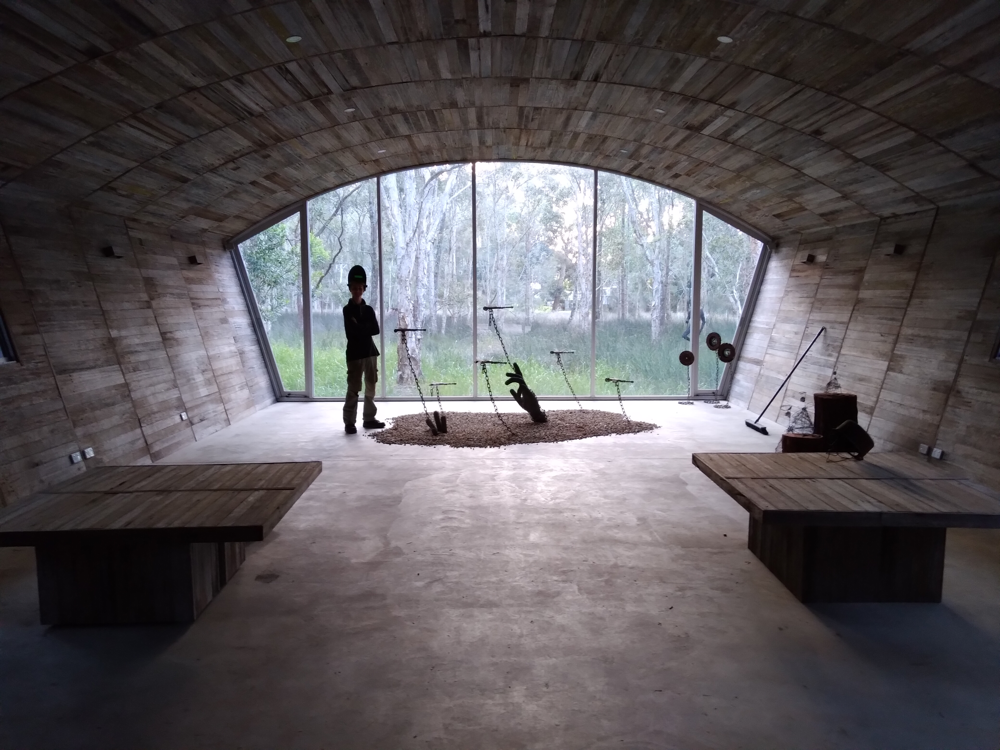
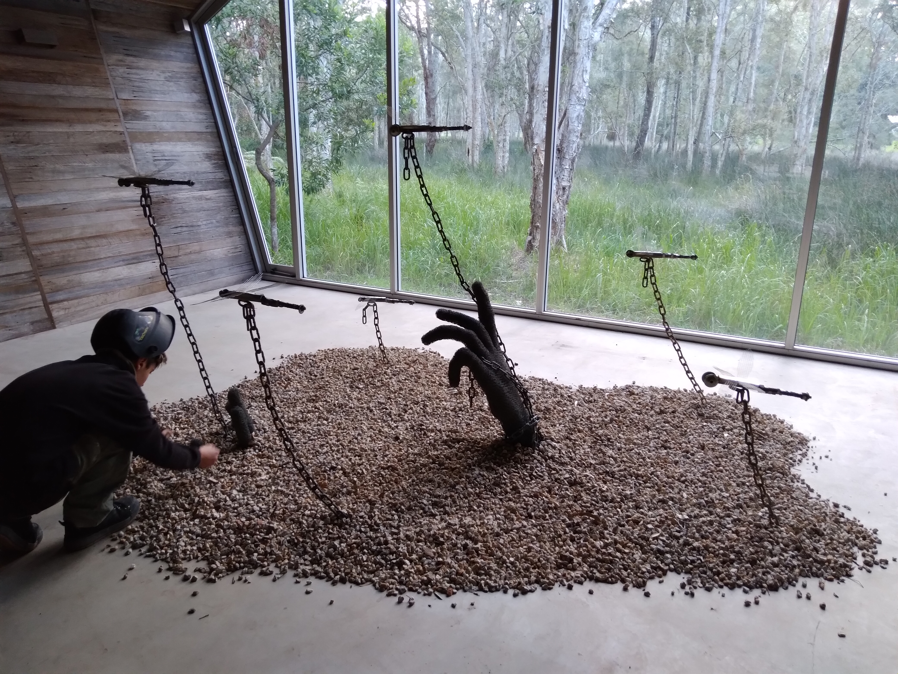
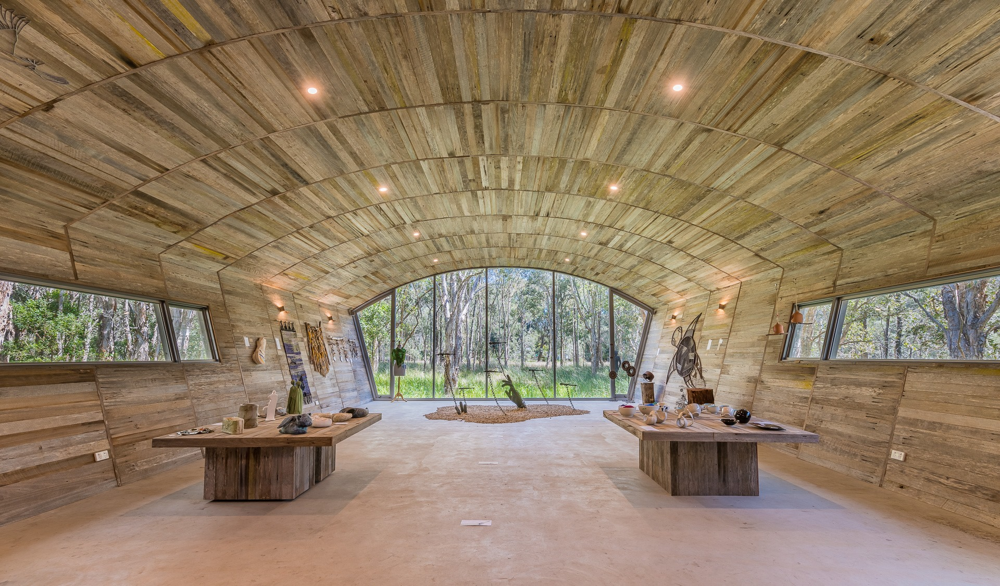

METAL / 02
Emergance
- WORK
- Sculptural installation
- YEAR
- 2020
- MEDIUM
- Steel, gravel, chain & wire
- CONTEXT
- Solo project · Undercover Artist Exhibition submission
Overview
Emergance is a sculptural installation of hands appearing to rise from a bed of gravel. Formed from wire and metal framing, the hands seem to be pulled upward by dragonflies connected to them with chains.
The work captures an uncertain moment between being buried and breaking through. As the hands emerge, the arrangement hints at other figures still beneath the surface, waiting to follow.

Design Brief
Created as an individual work for submission to the Undercover Artist Exhibition, the project explored the idea of emergence through a physical, figurative installation. I wanted to create the impression of bodies appearing from the earth without showing complete figures.
The contrast between the upward pull of the dragonflies and the weight of the chains adds an element of tension: a movement toward freedom that may also be restrained. The gravel, open wire forms and repeated hands all contribute to that sense of a scene still unfolding.


Process
Each hand was built from metal framing and wire, allowing the forms to remain recognisable while retaining a skeletal, open quality. The hands, dragonflies and chains were composed over the gravel to create a relationship between the figures and the ground beneath them.
The setup photographs document the work being arranged for presentation. Position, repetition and the space between each element were important to creating the impression that the installation extends beyond the hands already visible.


Outcome
The finished work presents a sequence of hands in the act of emerging, with the dragonflies and chains suggesting an unseen force drawing them from the earth. The repeated forms imply that the moment might continue, with more figures still to come.
I wanted that tension to remain unresolved. The viewer might see the figures as being helped upward, held back, or struggling to surface. That ambiguity is central to the work.
